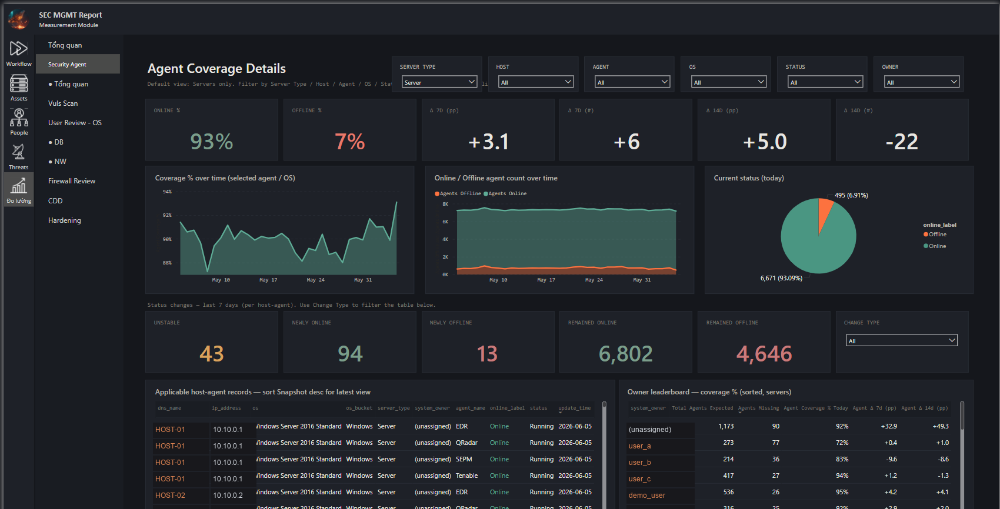
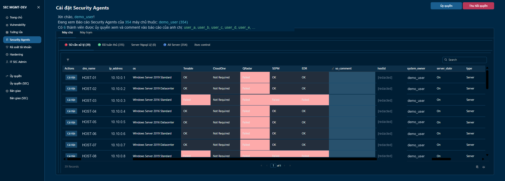

Security operations, shipped as data infrastructure.
Four years engineering the productized security stack behind ~30,000
production assets at a large bank — Power BI for the executive view,
an internal self-service platform for asset owners, Postgres
pipelines and Claude Code in between.
Security data lives in fragmented email threads, Teams chats and Excel sheets.
A simple question — "why doesn't SRV-PROD-04 have an
agent yet?" — should have a one-line answer. Today it requires piecing
a story back together from change requests, install logs, exception
sheets, ticket reopens, CAB emails and a Teams DM nobody bookmarked.
Evidence is scattered.A CR lives in one system, the exception in another, and the context for both lives in email, Teams chat and verbal handoffs that never make it to a record.
The story breaks halfway."Installed but failed" — failed for what reason? Who picked it up? Is there a compensating control? Six months later, no one can reconstruct it without interviews.
Approvals are informal.Many decisions exist as "we already agreed on this" without a formal record. When audit asks who approved an exception and when, the answer is somewhere in a meeting nobody minuted.
03Background
Four years inside a bank's security data layer.
I joined VPBank IT Security in 2022 with a data background and an
itch for the operational side of security. Since then I've owned the
compliance reporting layer — what gets measured, how it's tracked, who
sees what, and how owners close their own gaps without a ticket queue.
Assets in scope
~30,000
cloud · on-prem · network · endpoint
Compliance lift
60 → 90%+
agent & vuln program coverage
Security engineering
4 years
VPBank IT Security · 2022 →
Outcomes · what the program delivered
Audit prep time
weeks → days
evidence captured continuously, not pulled
Time-to-finding
quarterly → weekly
owners see their gaps on the same surface they act on
Manual reports retired
6 programs
digitized into self-service workflow
Skills & certifications
Skills
Power BIDAX · SMD · PBIR
SQLPostgreSQL · snapshots · views
Front-end DesignHTML · CSS · editorial UI
Data Engineeringpipelines · pg_cron · audit-replay
Certifications
CRISCCertified in Risk & Information Systems Control
PL-300Power BI Data Analyst Associate
DP-600Fabric Analytics Engineer Associate
IELTS 8.5English proficiency
04My Story
The platform grew with the problem.
Each iteration solved the bottleneck the last one exposed. What
started as a quarterly vulnerability snapshot kept compounding —
into centralized reporting, into a writeback surface owners could
act on, and now into the analytics layer on top of the history.
Iteration 01~ 2022
The first snapshot — vulnerability.
The original optimization. The quarterly vulnerability report
became versioned history: scan, rescan, before/after preserved.
One snapshot per quarter at first, then weekly. The append-only
replay pattern that runs the whole platform today started here.
SQLSnapshot modelPower BI
Iteration 02~ 2023
Centralized reporting.
One Power BI surface, multiple workflows — agent coverage,
hardening, firewall reviews, user-account recertification.
Each program plugs into the same model, so the executive
number is the operator number. No reconciliation meetings.

Executive surface — coverage · hardening · trend
Power BIDAXEditorial design
Iteration 03~ 2024
Writeback & exception handling.
Owners gained the right to act inside the report itself —
request exceptions, attest evidence, delegate scope. Audit
captured in-line, not in inboxes. The dashboard stopped being
something to look at; it became the workflow.

Operator surface — scope · exceptions · audit
JavaScriptPostgreSQLWorkflow
Iteration 042025 →
Recognition & anomaly detection.
Snapshot history meets analytics. Top-performing teams surfaced
automatically from the data leadership already reads. Silent
failures — coverage drift, directory quirks, owner churn —
flagged before the next review, not after.